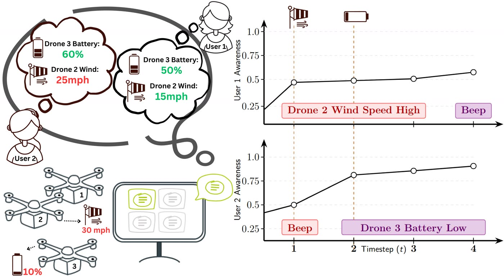

Best Student PaperAAMAS 2026
Planning Ahead with RSA: Efficient Signalling in Dynamic Environments by Projecting User Awareness across Future Timesteps
Proceedings of the 25th International Conference on Autonomous Agents and Multiagent Systems (AAMAS 2026), 1555–1563. Pragnesh Jay Modi Best Student Paper Award.
Abstract
Adaptive agent design offers a way to improve human-AI collaboration on time-sensitive tasks in rapidly changing environments. In such cases, to ensure the human maintains an accurate understanding of critical task elements, an assistive agent must not only identify the highest priority information but also estimate how and when this information can be communicated most effectively, given that human attention represents a zero-sum cognitive resource where focus on one message diminishes awareness of other or upcoming information. We introduce a theoretical framework for adaptive signalling which meets these challenges by using principles of rational communication, formalised as Bayesian reference resolution using the Rational Speech Act (RSA) modelling framework, to plan a sequence of messages which optimise timely alignment between user belief and a dynamic environment. The agent adapts message specificity and timing to the particulars of a user and scenario based on projections of how prior-guided interpretation of messages will influence attention to the interface and subsequent belief update, across several timesteps out to a fixed horizon. In a comparison to baseline methods, we show that this effectiveness depends crucially on combining multi-step planning with a realistic model of user awareness. As the first application of RSA for communication in a dynamic environment, and for human-AI interaction in general, we establish theoretical foundations for pragmatic communication in human-agent teams, highlighting how insights from cognitive science can be capitalised to inform the design of assistive agents.
BibTeX
@inproceedings{das2026planning,
title = {Planning Ahead with {RSA}: Efficient Signalling in Dynamic Environments by Projecting User Awareness across Future Timesteps},
author = {Das, Anwesha and Duff, John and Hoffmann, J{\"o}rg and Demberg, Vera},
booktitle = {Proceedings of the 25th International Conference on Autonomous Agents and Multiagent Systems (AAMAS 2026)},
pages = {1555--1563},
year = {2026},
publisher = {International Foundation for Autonomous Agents and Multiagent Systems},
doi = {10.65109/BRGK2754}
}